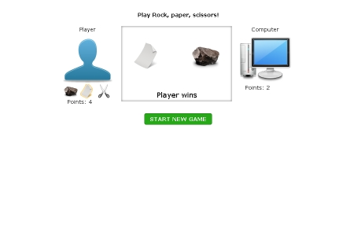
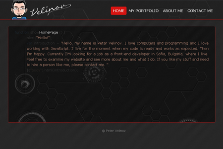
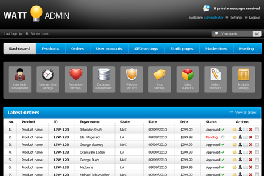
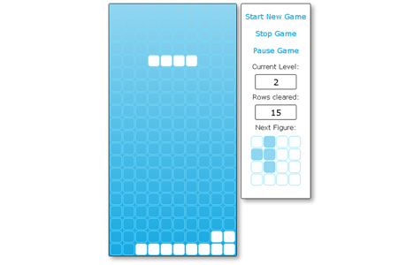
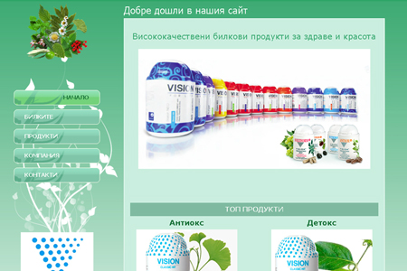
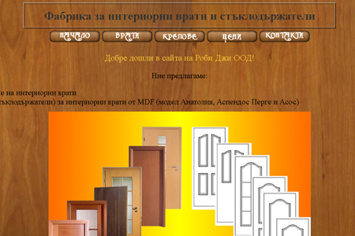
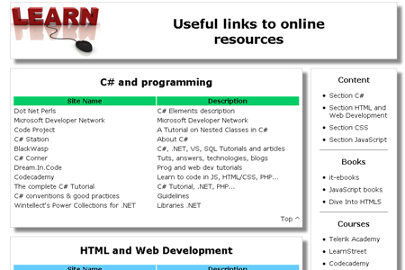

Personal projects
-

Sheeps and Rams game
One more implementation of the popular guessing game. The purpouse of making this games was to try out how "local storage" works.
-

Rock, Paper, Scissors game
Just a small game, but I played a little more with the JavaScript code in order to make some improvements. I had to prevent some bugs that appeared in situations like clicking the "start new game" button before the current bet is over. The rest of the code arranges the game logic.
-

Portfolio website
In this project I used Ajax for the first time. There is also a lot of jQuery code. The design was my idea. I didn't make it in .psd in advance. I just wrote down some ideas on paper and started working on them, following new ideas during the process. Here I also used PIE for IE CSS3 rendering, HTML5 shiv and jQuery custom content scroller.
-

Watt admin
I made this, because I wanted to exercise the slice and dice process. I found this free PSD template at free-psd.co.
-

Tetris
One day in the summer of 2013 I dared myself to make a JavaScript game. After almost two weeks of work the game was completed. I know table tags should not be used for organizing the page, but this time it was a game and I found it easier this way. After testing the code with Chrome's dev tools I found some weaknesses and fixed many bugs.
-

Biologically Active Food Supplements
This is my largest project so far. It consists of about 90 pages. Basically I used a free CSS template, which I modified a little. I made this website in 2010 and kept improving it for many months. Nowadays I look at the code I had worked on and laugh at myself, because it is messy. If I had time, I would change many things. It used to be on its own server, but now you can take a look at it following the image link.
-

Robi-G
This website represents a Bulgarian firm. The design and the images are my idea.
-
Un Beso
My first website. In 2008 the dance courses I was attending inspired me to share the joy of Latin music and culture with my friends by making an online radio. I added some content throughout the coming months.
-

Learning resources
One day this small page may be a good information resource for developers. Up to this point I have been collecting information for personal usage. Of course, the information, being on this server, is accessible to anyone.